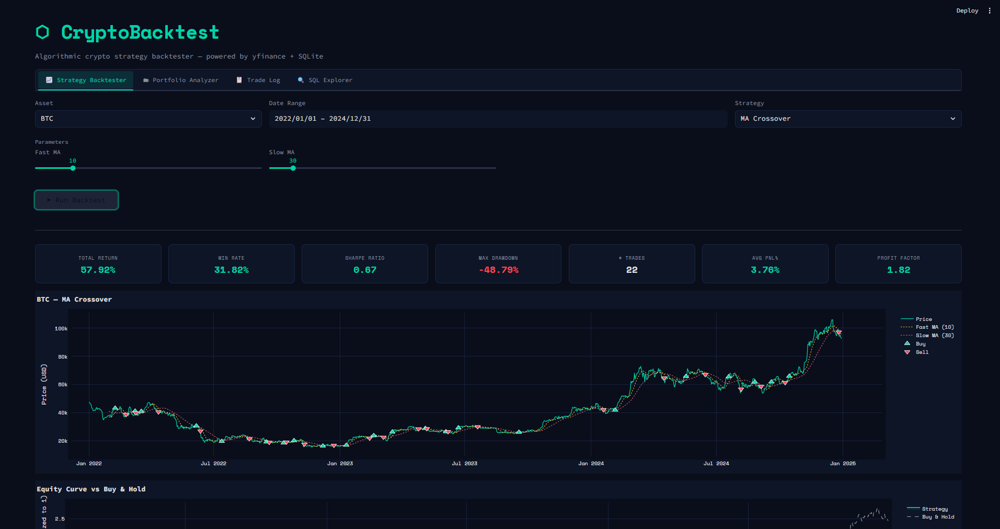
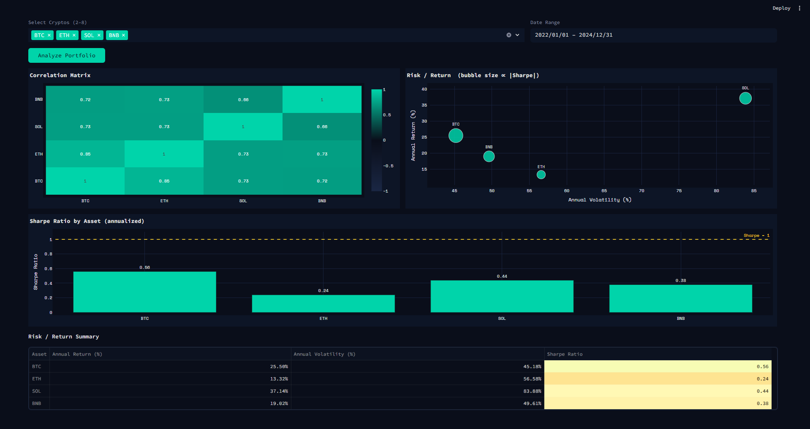
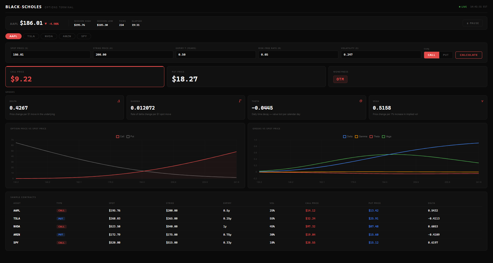
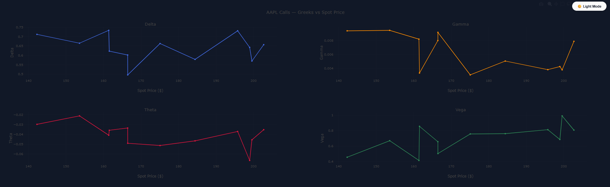
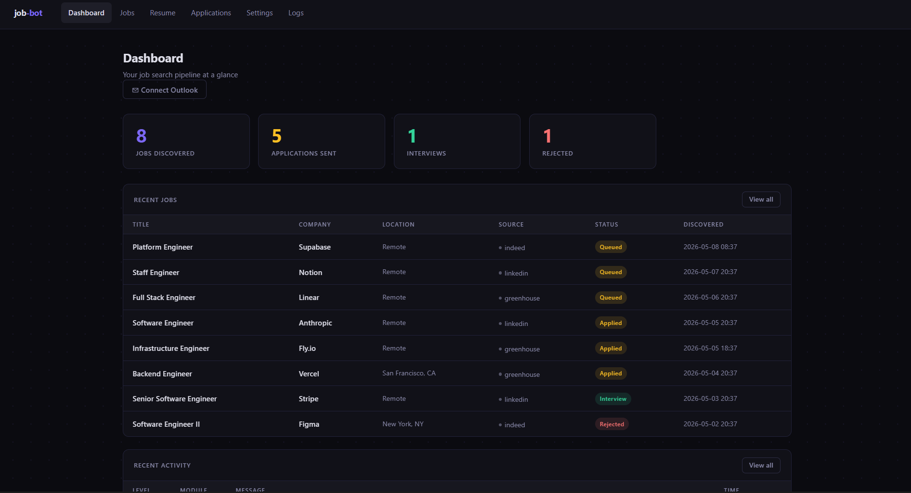
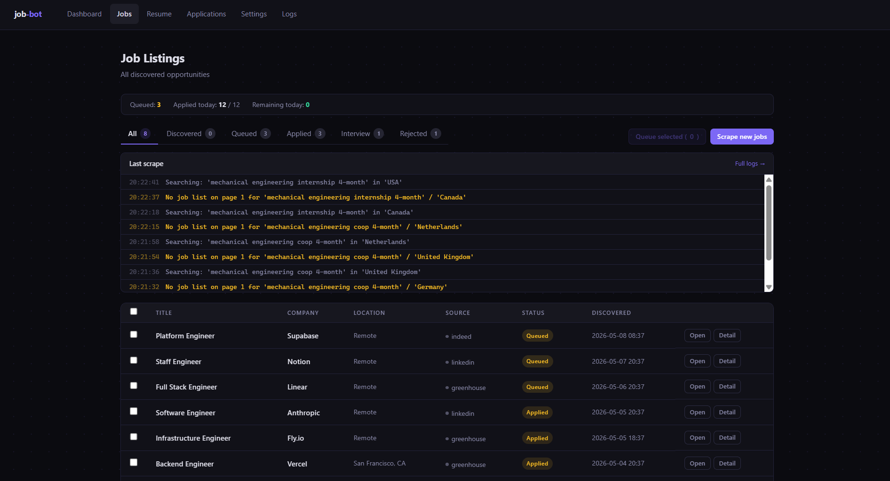
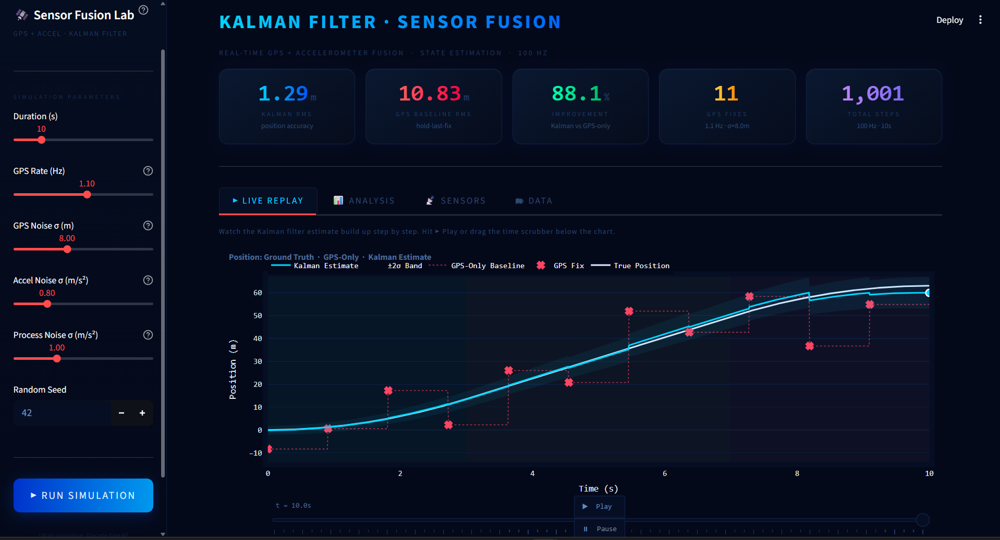
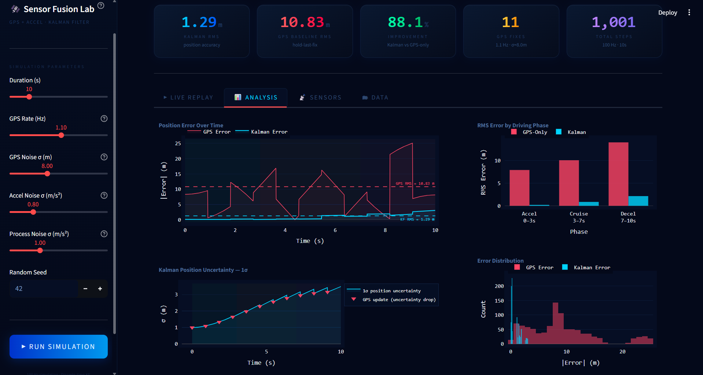

Projects
Quantitative Finance, Engineering Systems, and Automation
From options pricing engines and algorithmic trading systems to embedded hardware and control simulations. Every project here was built to understand something real, not just to have something to show.
Algorithmic Crypto Trading Backtester
Full backtesting engine across 3 years of OHLCV data with live performance analyticsBuilt a backtesting engine implementing MA Crossover, RSI Mean Reversion, and Volume Breakout strategies across 3 years of OHLCV data. Discovered a 58% win rate masking a 1.8x risk/reward ratio — restructured position sizing by cutting losers faster and extending winners until the strategy turned net positive.
How I Built It
- Implemented three strategies — MA Crossover, RSI Mean Reversion, and Volume Breakout — each backtested over 3 years of OHLCV data.
- Computed Sharpe ratio, max drawdown, win rate, and profit factor on every run for full performance visibility.
- Built a SQLite backend with a SQL Explorer and a portfolio correlation matrix across 10 crypto assets.
- Surfaced all results through a Streamlit dashboard with Plotly visualizations.
Key Decisions
- Found the 58% win rate was misleading — added risk/reward ratio analysis to surface what raw win rate hides.
- Restructured position sizing logic to exit losers faster and hold winners longer instead of treating every trade symmetrically.
- Used SQLite as the data layer to make the full trade history queryable and auditable, not just summarized.
Results
- Strategy turned net positive after restructuring position sizing around the 1.8x risk/reward ratio finding.
- Correlation matrix across 10 assets revealed which pairs moved together, informing diversification decisions.
- Sharpe ratio and max drawdown outputs made strategy comparison objective and reproducible.


Black-Scholes Live Options Pricing Dashboard
C++ pricing engine computing all 4 Greeks in real time across 5 equitiesC++ pricing engine built from scratch for European call and put options, pricing 5 simultaneous equities (AAPL, TSLA, NVDA, AMZN, SPY) with a custom CND polynomial approximation accurate to 6 decimal places using zero external math libraries. All 4 Greeks recalculate every 2 seconds across 1,800 price ticks per hour, with results logged to a normalized SQLite database.
How I Built It
- Implemented the full Black-Scholes formula in C++ for European calls and puts with no external math dependencies.
- Wrote a custom CND polynomial approximation accurate to 6 decimal places to replace standard library calls.
- Computed all 4 Greeks — Delta, Gamma, Theta, Vega — in real time, recalculating 8 output values every 2 seconds across 1,800 price ticks per hour.
- Logged results to a normalized SQLite database across 2 relational tables, storing 100+ timestamped snapshots per session.
Key Decisions
- Avoided all external math libraries to understand exactly what the CND approximation was doing numerically.
- Chose a normalized 2-table SQLite schema so snapshots could be queried across time, not just viewed at a single point.
- Priced 5 equities simultaneously to make the real-time recalculation rate meaningful under realistic load.
Results
- Custom CND approximation matched reference values to 6 decimal places with zero library dependencies.
- Engine sustained 1,800 price ticks per hour across all 5 equities with consistent output timing.
- SQLite backend stored 100+ timestamped snapshots per session, making historical price and Greek data fully queryable.


Job Application Automation Bot
Full-stack bot cutting per-application time from 15 minutes to 30 secondsFull stack job application bot scraping LinkedIn and auto-submitting applications, integrating the Anthropic API to generate tailored cover responses constrained to applicant bio and job description only. Reduced per-application time from 15 minutes to 30 seconds — a 97% reduction — while maintaining a 10% interview rate.
How I Built It
- Built a Playwright scraper to pull LinkedIn postings and auto-submit applications at scale.
- Integrated the Anthropic API to generate tailored cover responses constrained strictly to applicant bio and job description — no hallucinated credentials.
- Designed a 4-table normalized SQLite schema tracking 6 application stages with applicant count filtering to surface low-competition postings.
- Surfaced the pipeline through a real-time Flask dashboard with 2-second live polling.
Key Decisions
- Constrained the AI prompt to bio and job description only to prevent the model from fabricating experience.
- Added applicant count filtering so the bot prioritized postings with fewer applicants rather than just high-volume applications.
- Used 2-second polling on the Flask dashboard so application status was visible in near real time without rebuilding the page.
Results
- Cut per-application time from 15 minutes to 30 seconds — a 97% reduction.
- Maintained a 10% interview rate across automated submissions.
- 6-stage tracking schema made it possible to audit the full pipeline from scrape to response.


Kalman Filter Sensor Fusion Simulation
Physics-based GPS and accelerometer fusion achieving 93.7% RMS error reductionBuilt a physics-based simulation fusing noisy GPS and accelerometer data to estimate position and velocity of a moving object. GPS modeled with high noise and low frequency updates, accelerometer with low noise and high frequency updates. Motivated by real IMU sensor work on the Biomechatronics exoskeleton project. Full Kalman filter implemented from scratch, predict and update steps, full covariance matrix propagation, running at 100 Hz over 10 seconds.
How I Built It
- Modeled GPS with high noise and low update frequency, accelerometer with low noise and high update frequency — matching real sensor characteristics.
- Implemented the full Kalman filter from scratch including predict and update steps and full covariance matrix propagation.
- Ran the simulation at 100 Hz over 10 seconds to produce a meaningful number of ticks for statistical evaluation.
- Plotted raw GPS, raw accelerometer, and Kalman estimate to make the fusion benefit visually clear.
Key Decisions
- Modeled both sensors with realistic noise characteristics rather than using simplified equal-weight averaging.
- Implemented full covariance propagation instead of a scalar gain to understand how uncertainty compounds across predict and update cycles.
- Chose 100 Hz to stress the filter under a high tick rate and get stable RMS error measurements.
Results
- Achieved 93.7% RMS error reduction over raw GPS baseline, from 10.9 m down to 0.68 m across a 10 second simulated trajectory.
- Covariance propagation confirmed the filter was correctly weighting sensor confidence at each step.
- Simulation demonstrated the core trade-off between GPS accuracy and accelerometer drift at realistic noise levels.


E-Bike Speed Control
Physics-based PID simulation for speed tracking under loadI was helping build an e-bike through Electrium Mobility, and I wanted to understand what “good speed control” actually looks like when the load changes (like hills and drag). So I built a physics simulation in C++ and wrote a discrete PID controller to track step changes in target speed. I modeled basic resistive forces (aero drag + rolling resistance) and added a hill/load disturbance to see how the controller reacts. Then I logged results to a CSV and used Python to plot the velocity response, throttle behavior, and an efficiency-vs-speed view.
How I build It
- Wrote a discrete-time PID controller in C++ (P/I/D terms + integral clamping) and used it to generate a throttle command.
- Built a basic point-mass model with drag, rolling resistance, and a tunable disturbance force to represent load changes.
- Simulated step setpoints (5 → 15 → 25 m/s) to test overshoot, settling, and stability across speeds
- Logged time, setpoint, velocity, throttle, disturbance, and energy to CSV and plotted results in Python.
Key Decisions
- Kept the plant model simple (point-mass + resistive forces) so I could focus on controller behavior instead of perfect realism.
- Added actuator limits (0–1 throttle) and anti-windup clamping so the controller wouldn’t “run away” under load
- Used step changes and a disturbance force to stress-test the controller instead of only tuning at steady state.
Results
- The bike was able to settle to new speed targets without becoming unstable.
- Under added load, throttle output saturated as expected and speed temporarily dropped before recovering.
- Speed, throttle, and energy plots showed different behavior across low, medium, and high target speeds.

Speed response to step changes in target velocity.

Throttle output under load disturbance.
Smart Study Focus Timer
Designing and assembling a small embedded sensor systemDuring exam periods, I noticed I was sitting for long periods without really thinking about it, whether I was studying, scrolling on my phone, or just staying seated out of habit. To push myself to take breaks and reset, I built a small sensor-based device that monitors presence and provides a physical reminder through a visible LED indicator. I chose to approach this as a hardware project by working with sensors, microcontroller logic, and a custom enclosure rather than relying on a webcam or screen notification. Having a physical device beside me, especially with a light that changes state, made the reminder harder to ignore and more effective.
How I Build It
- Worked with Arduino hardware and basic PCB layouts to interface sensors with a microcontroller.
- Wrote the control logic to track presence, manage timing states, and trigger LED behavior.
- Tested sensor distance, angle, and placement during real study sessions, then adjusted positioning and wiring to reduce false triggers and missed detections.
- Designed and 3D-printed an enclosure to hold the electronics and allow easy access for changes.
Design Choices
- Chose a physical device over a webcam or software alert to make the reminder harder to ignore.
- Used a visible LED indicator that could be disabled in public spaces to avoid distraction.
- Chose to focus on making presence detection and timing work well instead of adding extra features.
Results
- Achieved reliable presence detection and reminder behavior.
- Validated the system through repeated use during exam periods.
- Learned how to troubleshoot sensor behavior and wiring issues during real world use.

Energy Collecting Turbine
Design and fabrication of a small electromechanical energy systemI worked on a hands-on project focused on converting mechanical rotation into usable electrical output using a small wind-driven system. The goal was not to maximize efficiency, but to understand how mechanical design choices affect rotation, friction, and power generation in a real build. I designed a vertical axis wind turbine, fabricated the rotor components, and connected the mechanical system to a generator circuit to produce DC output during testing.
How I built It
- Modeled a vertical-axis wind turbine (VAWT) in CAD, focusing on geometry that could be fabricated and assembled reliably.
- Selected PVC and Nylon for the rotor components to balance stiffness, weight, and rotational inertia.
- Put the rotor together, noticed drag while spinning it by hand, and fixed it by sanding tight fits, realigning the shaft, and reseating parts until it rotated freely.
- Connected the turbine to a small generator circuit and verified electrical output during wind testing.
Design Constraints
- Focused on getting the turbine to spin smoothly first, instead of chasing blade shapes or efficiency numbers.
- Picked materials that were easy to source and work with in the shop, even if they weren’t the “best on paper.”
- Built everything with limited tools and time, so designs had to be simple enough to fabricate and adjust by hand.
Results
- The turbine rotated smoothly after fit and alignment adjustments.
- Mechanical rotation was successfully converted into DC electrical output during wind testing.
- The build demonstrated the relationship between material choice, friction, and energy collection in a physical system.

Speed response to step changes in target velocity.